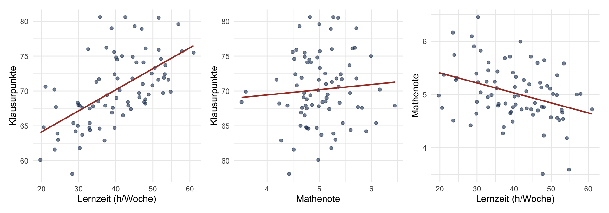

Worked Example: Hypothesengenerator an einer Statistik-Aufgabe
Multiple Regression als Demonstrationsbeispiel der Methode
NoteWas du hier liest
Eine kommentierte Anwendung des Hypothesengenerators auf eine konkrete Statistik-Aufgabe. Du beobachtest, wie ein LLM in der Hypothesengenerator-Rolle die in einer Aufgabenstellung enthaltenen, aber nicht explizit benannten Voraussetzungen enumeriert. Die Aufgabe stammt aus einem Bachelor-Statistikkurs; sie dient hier ausschliesslich als Demonstrationsbeispiel.
Die Methode überträgt sich auch auf andere Fächer. In Block 2 wendest du sie auf eine Teilaufgabe aus deiner eigenen Lehre an, die mit Statistik nichts zu tun haben muss.
Die Teilaufgabe
Wortlaut: Eine Lernende rechnet in R eine multiple Regression mit zwei Prädiktoren: Lernzeit pro Woche (\(X_1\), in Stunden) und Mathematik-Maturanote (\(X_2\), auf der Schweizer Skala 1-6) sollen die Punktzahl in der Statistik-Klausur (\(Y\), Skala 0-100) vorhersagen. Sie soll die Regressionskoeffizienten interpretieren und das Modell als Ganzes beurteilen.
Kurskontext: Übung 5 im Statistik-II-Modul, Bachelor-Psychologie. Die Lernenden haben das Semester davor Statistik I (bis und mit einfache lineare Regression) und in den ersten Wochen von Statistik II Partial- und Semipartialkorrelation behandelt. Diese Aufgabe ist die erste Anwendung der multiplen Regression im Kurs.
Lernziel: Die Lernende soll zeigen, dass sie die Formulierung “kontrolliert für” als bedingte Lesart (“bei gleichem \(X_2\)”) und nicht als experimentellen Eingriff versteht, und einen Regressionskoeffizienten unter Berücksichtigung weiterer Prädiktoren angemessen interpretieren kann.
Die Daten
Für diese Demonstration arbeiten wir mit einem simulierten Datensatz von \(n = 80\) Lernenden. Die Konstellation ist so gewählt, dass sie eine in der Lehrbuchliteratur häufig zitierte Suppressions-Situation reproduziert: beide Prädiktoren hängen positiv mit der Klausurpunktzahl zusammen, korrelieren jedoch untereinander negativ. Eine plausible inhaltliche Lesart dazu: Lernende mit besserer Mathenote investieren tendenziell weniger Lernzeit, weil ihnen der Stoff leichter fällt.
Die Tabelle zeigt das erwartete Muster: Lernzeit korreliert deutlich positiv mit der Klausurpunktzahl, Mathenote nur schwach. Lernzeit und Mathenote korrelieren negativ.
R-Code
p1<-ggplot(daten, aes(x =Lernzeit, y =Punkte))+geom_point(alpha =0.6, color ="#1E3A5F")+geom_smooth(method ="lm", se =FALSE, color ="#A63D2F", linewidth =0.8)+labs(x ="Lernzeit (h/Woche)", y ="Klausurpunkte")+theme_minimal(base_size =11)p2<-ggplot(daten, aes(x =Mathenote, y =Punkte))+geom_point(alpha =0.6, color ="#1E3A5F")+geom_smooth(method ="lm", se =FALSE, color ="#A63D2F", linewidth =0.8)+labs(x ="Mathenote", y ="Klausurpunkte")+theme_minimal(base_size =11)p3<-ggplot(daten, aes(x =Lernzeit, y =Mathenote))+geom_point(alpha =0.6, color ="#1E3A5F")+geom_smooth(method ="lm", se =FALSE, color ="#A63D2F", linewidth =0.8)+labs(x ="Lernzeit (h/Woche)", y ="Mathenote")+theme_minimal(base_size =11)p1+p2+p3

Bivariate Zusammenhänge zwischen Klausurpunktzahl und beiden Prädiktoren sowie zwischen den beiden Prädiktoren.
Die Musterlösung
Die Lernende rechnet das Modell in R und beurteilt es anhand der Modellausgabe.
Geschätzte Regressionskoeffizienten und ihre Inferenzstatistik:
R-Code
modell<-lm(Punkte~Lernzeit+Mathenote, data =daten)modell|>tidy()|>mutate(across(where(is.numeric), \(x)round(x, 3)))|>knitr::kable()
term
estimate
std.error
statistic
p.value
(Intercept)
40.162
5.378
7.468
0.000
Lernzeit
0.360
0.047
7.685
0.000
Mathenote
3.103
0.877
3.540
0.001
Modellzusammenfassung: erklärte Varianz und globaler \(F\)-Test:
Eine erwartbare Antwort der Lernenden auf diese Ausgabe sieht etwa so aus:
Lernzeit hat einen positiven Effekt auf die Klausurpunktzahl (\(b_1 \approx 0{,}43\), kontrolliert für die Mathenote). Pro zusätzliche Lernstunde pro Woche steigt die erwartete Punktzahl um etwa \(0{,}43\) Punkte. Die Mathenote zeigt ebenfalls einen positiven Effekt (\(b_2 \approx 3{,}9\)). Insgesamt erklärt das Modell etwa \(47\%\) der Varianz (\(R^2 \approx 0{,}47\)).
Diese Antwort enthält die richtigen Zahlen und die richtigen Vorzeichen. Die Lehrperson, die sie korrigiert, vergibt vermutlich die volle Punktzahl. Was darin allerdings nicht sichtbar wird: ob die Lernende verstanden hat, was “kontrolliert für” bedeutet, und ob sie denselben Output unter veränderten Bedingungen lesen könnte.
Der Hypothesengenerator-Prompt
Wir geben das Aufgabenmaterial (Aufgabenstellung plus Musterlösung) einem LLM mit der folgenden Anweisung. Den Prompt kannst du über das Symbol oben rechts im Codeblock kopieren und in Block 2 für deine eigene Teilaufgabe übernehmen; an der markierten Stelle fügst du dein eigenes Material ein.
Prompt für den Hypothesengenerator
Hier ist Material aus einem Statistik-Kurs. Spiele eine Person, die gerade dieVorgängerveranstaltung abgeschlossen hat, aber diese Aufgabe hier noch nichtgesehen hat.Für jeden Schritt in der Musterlösung, liste auf: was müsste die Personbereits wissen, erkennen oder begründen können, um den Schritt zu verstehen?Markiere alles, was das Material voraussetzt, aber nicht selbst erklärt.Sortiere die Liste in drei Typen:- Faktenwissen (Abrufen): was die Person aus dem Gedächtnis abrufen können muss.- Klassifikationswissen (Erkennen): was sie als Instanz eines Konzepts oder Anwendungsfalls erkennen können muss.- Erklärungswissen (Begründen): was sie begründen können muss, einschliesslich konzeptioneller Verständnisse und Interpretationen.Material:<<< HIER DEN VOLLSTÄNDIGEN LÖSUNGSWEG DER ÜBUNG EINFÜGEN: Modellanpassung in R, Tabellierung der Koeffizienten, Interpretation in Worten, Beurteilung des Modells anhand R^2 und globalem F-Test >>>
CautionWas dieser Prompt nicht kann
Das LLM hat keinen Zugang zu deiner konkreten Vorgängerveranstaltung. Es enumeriert eine plausible Liste von Voraussetzungen für eine Person an dieser Stelle des Curriculums, nicht eine an deinem Material gemessene. Daraus folgen zwei Risiken, denen du in der weiteren Arbeit begegnen musst:
Das LLM kann Voraussetzungen erfinden, die in deinem Vorkurs gar nicht behandelt werden. Sie sehen plausibel aus, weil sie in Lehrbüchern dieser Stufe häufig stehen.
Es kann umgekehrt Voraussetzungen auslassen, die du tatsächlich lehrst, die aber in Lehrbüchern selten explizit ausgewiesen sind.
Behandle die ausgegebene Liste deshalb als Hypothesen, die du gegen dein eigenes Wissen über deine Lernenden und über deinen Vorkurs prüfst. Die Falsifikationsnotiz im Closing macht diesen Prüfschritt verbindlich.
Was das LLM enumeriert
Das LLM listet, in der Rolle der noch nicht fortgeschrittenen Lernenden, die folgenden Voraussetzungen auf. Wir geben hier die wesentlichen Punkte wieder, leicht in der Reihenfolge geglättet.
Faktenwissen (Abrufen):
Was \(r\), \(r^2\), \(R^2\), \(b\) und \(\beta\) jeweils bezeichnen und worin sie sich unterscheiden.
Was die Notation \(r_{YX_1 \mid X_2}\) gegenüber \(r_{YX_1}\) bedeutet (Partialkorrelation gegenüber bivariater Korrelation).
Dass \(b_0\) den vorhergesagten \(Y\)-Wert bei \(X_1 = X_2 = 0\) bezeichnet und nicht “den Durchschnitt”.
Dass die R-Syntax lm(Y ~ X1 + X2) ein Modell ohne Interaktion ist, während lm(Y ~ X1 * X2) eines mit Interaktion wäre.
Klassifikationswissen (Erkennen):
Eine Forschungsfrage als “Vorhersage durch mehrere Prädiktoren” erkennen und nicht als “Korrelation testen”.
Den Output von summary(lm(...)) als strukturiertes Ergebnis lesen: Koeffizienten, Standardfehler, \(t\)-Werte, \(p\)-Werte, \(R^2\).
Erkennen, dass eine bivariate Korrelation \(r_{YX_1}\) und der entsprechende Koeffizient \(b_1\) in einer multiplen Regression unterschiedliche Grössen messen.
Eine signifikante bivariate Korrelation, die in der multiplen Regression nicht-signifikant wird, als Hinweis auf Konfundierung oder Multikollinearität lesen.
Erkennen, wann lm(Y ~ X1 + X2) der richtige Aufruf ist, und den dazugehörigen R-Workflow abrufen: Daten einlesen, Verteilung und Zusammenhang grafisch prüfen, Modell anpassen.
Erklärungswissen (Begründen):
Den Koeffizienten \(b_1\) in Worte übersetzen: “pro Einheit Anstieg von \(X_1\) bei Konstanthaltung von \(X_2\)”, einschliesslich der konditionalen Lesart von “kontrolliert für”: \(b_1\) ist der Effekt von \(X_1\)bei gleicher Mathenote, nicht der bereinigte Effekt nach einem Eingriff.
Den Anteil erklärter Varianz aus \(R^2\) ablesen und in Worte fassen.
Warum \(b_1\) in der bivariaten und in der multiplen Regression unterschiedliche Werte haben kann.
Warum \(R^2\) nicht die Summe der bivariaten \(r^2\) ist, sobald die Prädiktoren miteinander korrelieren.
Was “nicht signifikant” über den wahren Effekt aussagt: nicht “kein Effekt”, sondern “die Daten reichen nicht, um den Effekt von Null zu unterscheiden”.
Dass der Zweck des Modells (Vorhersage oder Erklärung) die Interpretation der Koeffizienten beeinflusst.
Die nicht thematisierten Voraussetzungen
Die Liste enthält rund fünfzehn Voraussetzungen. Die meisten davon hat die Lehrperson im Kurs gelehrt. Drei oder vier hat sie nicht explizit thematisiert, weil sie ihr selbst seit Jahren automatisiert sind. Diese sind didaktisch die interessantesten, weil sie dort sitzen, wo die Lehrperson nicht hinschaut.
Was \(b_1\) tatsächlich heisst
Der Koeffizient \(b_1 \approx 0{,}43\) besagt: bei zwei Lernenden mit derselben Mathenote unterscheidet sich die erwartete Klausurpunktzahl um etwa \(0{,}43\) Punkte pro zusätzlicher Lernstunde pro Woche. Die zentrale Wendung ist hier “mit derselben Mathenote”. Eine Lernende ohne dieses Verständnis liest \(b_1\) als marginalen Effekt der Lernzeit; das ist aber die bivariate Korrelation, eine andere Grösse. Die Aussage des multiplen Modells ist dagegen eine bedingte: gegeben einen festen Wert von \(X_2\), was sagt das Modell über die Beziehung von \(X_1\) und \(Y\).
Die Schwierigkeit besteht darin, dass das Wort “kontrolliert” im Alltagsdeutsch eine aktive Komponente hat: man kontrolliert, indem man eingreift. Im Modell ist nichts kontrolliert worden im Sinne eines experimentellen Eingriffs; die Mathenote wurde im Datensatz beobachtet, nicht manipuliert. “Kontrolliert für” ist eine bedingte Lesart, nicht eine Aussage über kausale Bereinigung.
Was der Intercept \(b_0\) tatsächlich heisst
Der Intercept \(b_0 \approx 34\) ist die vorhergesagte Klausurpunktzahl, wenn Lernzeit und Mathenote beide null wären. Beides ist im Datensatz nicht sinnvoll: niemand mit Mathenote 0 sitzt in der Klausur, und Lernzeit von null Stunden pro Woche liegt ausserhalb des beobachteten Bereichs (\(30\) bis \(50\) Stunden). Der Intercept ist deshalb eine mathematische Notwendigkeit der Geraden, keine inhaltlich interpretierbare Grösse.
Sobald man Prädiktoren zentriert (von jedem Wert den Mittelwert subtrahiert), ändert sich die Bedeutung von \(b_0\): der Intercept wird zur erwarteten Klausurpunktzahl bei durchschnittlicher Lernzeit und durchschnittlicher Mathenote, was eine inhaltlich sinnvolle Grösse ist. Die Koeffizienten \(b_1\) und \(b_2\) bleiben dabei unverändert. Dieser Punkt taucht in Lehrbüchern oft nur im Nebensatz auf; viele Lernende verlassen den Kurs, ohne ihn je gesehen zu haben.
Warum die Koeffizienten beim Zentrieren gleich bleiben
Schreiben wir \(X_1^* = X_1 - \bar{X}_1\). Dann gilt \(b_1 X_1 = b_1 X_1^* + b_1 \bar{X}_1\). Der Term \(b_1 \bar{X}_1\) ist eine Konstante und wandert in den Intercept; die Steigung selbst bleibt unverändert. Die Aussagekraft des Modells über die Beziehung von \(X_1\) und \(Y\) ist also vom Zentrieren unabhängig; nur die Bedeutung des Intercepts wird interpretierbar.
Warum \(b_1\) und \(r_{YX_1}\) unterschiedlich sind
In der bivariaten Regression von \(Y\) auf \(X_1\) wäre der Koeffizient von \(X_1\) proportional zu \(r_{YX_1}\). In der multiplen Regression ist der Koeffizient \(b_1\) in der Regel anders, weil er den Anteil der Variation in \(X_1\) verwendet, der nicht durch \(X_2\) erklärt wird. Wenn \(X_1\) und \(X_2\) korrelieren, ist dieser nicht-durch-\(X_2\)-erklärte Anteil kleiner als die volle Variation in \(X_1\), und der Koeffizient passt sich entsprechend an.
Im hier verwendeten Datensatz liegt eine reziproke Suppression vor: \(X_1\) und \(X_2\) korrelieren negativ, beide aber positiv mit \(Y\). Eine Konsequenz ist, dass die standardisierten Regressionskoeffizienten grösser werden können als die bivariaten Korrelationen. Eine Lernende, die erwartet, dass Hinzunahme weiterer Prädiktoren den Effekt eines Prädiktors immer abschwächt, wird hier überrascht.
Suppressions-Mechanik
In der bivariaten Sicht “kontaminiert” \(X_2\) die Beziehung zwischen \(Y\) und \(X_1\): Lernende mit hoher Mathenote investieren weniger Lernzeit (negative \(X_1\)-\(X_2\)-Korrelation), profitieren aber trotzdem (positiver \(b_2\)). Diese gegenläufigen Wirkungen kompensieren sich in der bivariaten Korrelation \(r_{YX_2}\) teilweise und führen dazu, dass \(r_{YX_2}\) klein wirkt, obwohl \(b_2\) substantiell ist. Erst die multiple Regression trennt diese beiden Beiträge sauber.
Eine Anmerkung zu \(R^2\)
Das Modell erklärt etwa \(47\%\) der Varianz. Diese Zahl ist nicht die Summe der bivariaten \(r^2\), sobald die Prädiktoren miteinander korrelieren: \(r_{YX_1}^2 + r_{YX_2}^2\) überschätzt oder unterschätzt \(R^2\), je nach Vorzeichenstruktur. Das ist kein Detail; viele Lernende übertragen die Additivität aus der ANOVA mit orthogonalen Faktoren naiv auf die Regression mit korrelierten Prädiktoren. Eine vertiefte Darstellung findet sich in den Nachlesen-Materialien zur Übung.
Was die Methode hier geleistet hat
Das LLM hat nicht gewusst, welche Voraussetzungen die Lehrperson in ihrem Kurs tatsächlich gelehrt hat. Es hat alle Voraussetzungen aufgelistet, die für die Lösung der Aufgabe notwendig sind, ohne zwischen “schon gelehrt” und “vorausgesetzt” zu unterscheiden. Diese Liste ist der Ausgangspunkt: die Lehrperson geht sie durch und markiert pro Eintrag, ob die Voraussetzung in ihrem Kurs tatsächlich behandelt wurde oder nicht.
Die Methode beruht nicht auf einer besonderen Eigenschaft des LLM. Sie nutzt aus, dass eine Aussenperspektive den Lösungsweg ohne automatisierte Überspringungen abgehen muss. Was die Lehrperson nicht mehr sieht, wird sichtbar, weil das LLM keinen Anreiz hat, etwas wegzulassen.
Was du in Block 2 tust
In Block 2 nimmst du diesen Prompt, fügst dein eigenes Material ein und tust dasselbe: du markierst, welche Voraussetzungen das LLM enumeriert hat, und entscheidest pro Eintrag, ob deine Lernenden diese Voraussetzung mitbringen oder nicht. Die Einträge, die du als nicht-gelehrt-und-trotzdem-vorausgesetzt markierst, sind die didaktisch interessanten Stellen deiner Aufgabe.
Die Ergebnisse trägst du in die Spec-Vorlage ein. Ein vollständig ausgearbeitetes Beispiel-Spec für die hier gezeigte Aufgabe findest du unter Beispiel: Multiple Regression.
In Block 3 fügst du dein fertiges Spec in ein Chat-Werkzeug deiner Wahl ein und beobachtest, was es produziert. Wenn der Output nicht passt, fehlt etwas im Spec.